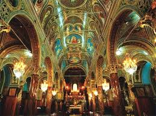
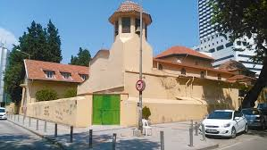

Şehrin en eski kiliselerinden biridir Çarpıcı detaylara sahip mimarisi, sanatsal üslubuyla dikkat çekiyor 17’nci yüzyılda Fransa Kralı’nın isteği ve Osmanlı Padişahı Kanuni Sultan Süleyman’ın onayıyla yapıldı günümüzde ziyarete ve ibadete açık durumdadır


 "İzmir"e dönmek için basın
"İzmir"e dönmek için basın